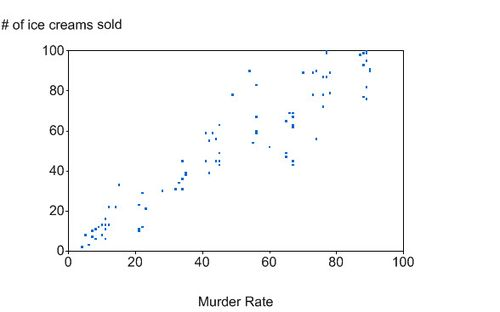
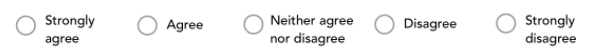

Lecture 4: Introduction to study design
Measurement and variables
As I said in the previous lecture, the focus of this course, and most of the undergraduate research methods courses that you will take, will be on quantitative methods. Today will be the start of our journey of learning more about the specifics of study design for quantitative research.
Quantitative research is all about measurement, and the aim of quantitative research is to take a phenomenon and condense it down into a few variables that can be measured as precisely and reliably as possible. We also saw that quantitative research often made use of statistical methods, and that the aim of quantitative research was often to develop generalisations or generally applicable theories. In today’s lecture, we’re going to learn a bit about how to design quantitative studies so that all these things are possible.
The “how” of quantitative research
The conclusions that we can draw from our research depends on how that knowledge was generated and the research design that was used. For any piece of research that we conduct (or piece of research that we read), we need to be able to answer several questions: 1) How do we actually test hypotheses appropriately? 2) How do we generalise our findings? 3) How do we quantify seemingly unquantifiable things? The answer to these questions lies in research design.
Research design
We can use different types of research design to answer different research questions and to test different hypotheses.1 Study designs can vary along many dimensions. For example, study designs can differ on whether they include a manipulation or not. They can differ on whether they use a between-subjects or within-subjects measurement. And they can differ with respect to the time frame used for data collection.
Study designs are usually broken into two broad categories: Experimental and non-experimental designs. The key feature of experimental designs is that there is some form of manipulation. By manipulation, we just mean some sort of change that is introduced that may have some impact on the thing our study is measuring. The manipulation might be something that is intentionally introduced by the experiment, or it might be some change that is naturally occurring. We’ll see that this will be the difference between true experiments and natural experiments.
Not all possible designs include manipulations. Designs that don’t include manipulations are known as observational or correlational designs. In correlational designs we rely on observed data that are not subjected to any experimental manipulation. By observational, we don’t mean that we’re just looking. There is still measurement, whether this is through questionnaires, lab tasks, or similar.
Correlational designs have several practical advantages over experimental designs. These include the ability to collect data from far more people than would be practical for an experimental design. And they also allow us to study phenomena where experimental manipulations would be unethical. But correlational designs also have drawbacks when compared with experimental designs. In particular, while correlational designs can be used to investigate relationships between variables, but in order to make causal claims, experimental designs (whether true experiments or natural experiments) are needed.
An example: Ice cream and murder
In Figure 1 we can see a plot of the relationship between the murder rate and the number of ice creams sold in New York City. We can see from the plot that when the murder rate is high then the number of ice cream sales is also high and when the murder rate is low then the number of ice creams sold is also low. But are they just correlated or does ice cream cause murder?
We might decide to conduct some research into this relationship between ice cream and murder to see whether there actually is some sort of causal relationship. Obviously, there are many ethical issues with conducting an experiment on this, but let’s put those aside for now and see what such an experiment might actually look like.
The first step in our experiment would be to specify our research question. In this example, our research question might be something like: Does eating ice cream make you more prone to murderous tendencies? From this we can now formulate our hypothesis. In our hypothesis we will actually specify the outcome we expect. Our hypothesis might be something like: Eating ice cream increases the desire to commit murder.
Testing our hypothesis with an experiment might involve something like the following steps: First, we might invite a group of people into the lab. Half these people will be given some ice cream to eat, and the other half will not be given ice cream. This is our manipulation. Next, we might get all of our participants to look at several images of people (our stimuli) while we get to rate how much they want to eliminate them on a scale of 0 (no desire) to 9 (all the desire possible).
In this study, we have an independent variable (IV) or predictor variable. This is the thing that we’re manipulating. In our case, this is whether people ate ice cream or not. We manipulated our IV by assigning people to one of two groups: The ice cream condition or the no ice cream condition. We also have one dependent variable (DV) or outcome variable. In our case, this would be participants total score on our desire to eliminate measure.
After we have all our data we could then compare the results between the ice cream condition and the no ice cream condition to see which group gave higher ratings for their desire to eliminate people (the outcome or DV).
Independent and Dependent Variables
The terms independent and dependent variable are two pieces of jargon that are important to learn. You’ll come across them a lot in your research methods modules (and in other modules like Cognition in Clinical Contexts).
The dependent variable is the variable that you analyse. Its value depends on the values of other variables.
An independent variable is a variable that influences the values of your dependent variable.
In our ice cream example, the variable we’re measuring is the total score on the desire to eliminate measure. This is our dependent variable. We expect this to be influenced by whether somebody was given ice cream or not. Because we expect ice cream to influence our dependent variable, the presence, or absence, of ice cream is our independent variable.
Independent and dependent variables might be measured at any level of measurement, and they might be continuous or discrete.
In the context of regression analyses (which you’ll learn about later) the DV is sometimes also called the outcome, and the IVs are sometimes also called the predictors.
Features of good study design
Our study of the relationship between murder and ice cream is an example of a very unethical study, but it is also a poorly designed study. In a well-designed experiment, we can be confident in saying our manipulation caused a change in our outcome variable. But this isn’t the case for our ice-cream study. Let’s take a look at some features of good study design to see why.
Controls
Our imaginary study didn’t use any controls. We recruited all kinds of people without giving consideration to how different characteristics might affect our results. Let’s say, for example, that all the people that we recruited were actually lactose intolerant and that for these people eating ice-cream caused a great deal of discomfort. Perhaps it is actually this discomfort that caused their murderous rage and their murderous rage is not specific to ice cream per se. It could equally well be caused by drinking milkshakes.
We might also not have had a standardised set of instructions that we gave to participants. Some participants might have arrived very hungry and other participants might have arrived very full. Maybe the differences that we observe are actually a result of some participants being hangry.
Maybe we didn’t control our IV appropriately. We might have often changed the brand or the flavour of the ice cream. Some days we might have run out of ice cream and used frozen yoghurt instead. And some days we might have given a small amount of ice-cream and on other days we might have forced our participants to eat a large amount of ice cream. If we had so many changes from participant to participant then it would be difficult to know exactly what caused any changes in our outcome.
We might also not have controlled the lab environment adequately. On some days the heating might have been up really high. And other days the air-conditioning might have been up really high instead. Maybe it’s just the heat that’s driving people into a murderous rage?
Randomisation
Another feature that might have been missing from our study is that we didn’t randomly assign people to groups: Maybe we did our participant recruitment first at a dentist’s office and then at a supermarket. And maybe all participants recruited first were assigned to the ice cream condition with the second batch of participants assigned to the no ice cream condition. Because of this, it might so happen to be the case that all the participants in the ice cream condition just so happened to have sensitive teeth. This would affect the results by giving us the impression that ice cream increases murderous tendencies when it doesn’t. To deal with these issues, participants should have been sorted into groups randomly. A well-designed experiment would randomise the participant allocation and the stimulus presentation order (in our experiment, this refers to the order in which the images of faces were rated).
Blinding
In our study, we might have told participants that we were interested in the effect of ice cream on murderous tendencies. And we might have also given participants the ice cream ourselves. Participants may have (consciously or not) modified their behaviour to either fit the hypothesis or to contradict the hypothesis. Because of this, it is crucial that participants are unaware of what the hypothesis was and also what condition they have been allocated to. If participants are naïve to group allocation then the study is to be single-blind. If neither the participants nor the researcher know which condition the participants are put in, then the study design is known as double-blind. In such a case allocation might be recorded but only revealed once the study is over and the data are being analysed.
Theoretical framework
The choice of predictor (IV) and outcome (DV) variables does not happen in a theoretical vacuum. Rather, these choices are based on theory. In our experiment, the decision to have ice cream as the IV and murderous tendencies as the DV was not based on any theory. It could be that committing murder causes people to eat ice cream. In which case, we should probably have swapped around our IV and DV. Or it might be that they’re completely unrelated. To have good reasons for running the experiment we did, we would probably have to be able to tell some kind of a plausible story about how eating ice cream a murder were related. Such a story would probably have to make reference to some kind of psychologically or biologically plausible mechanism that might explain the connection.
Types of experimental studies
We’ve already talked about experimental designs through our example. But it’s worth spending a little more time talking about different kinds of experimental studies.
(True) Experiments
First, we have true experimental studies. True experiments usually have tight controls. As a result, they can be somewhat artificial, because they abstract away from reality. This means that they can sometimes lack something called ecological validity. Ecological validity refers to the ability to generalise the results of the study to real-life settings. That is, just because something is true in the lab, doesn’t necessarily mean that it will be true in “the real world”. Experimental designs do, however, provide the most rigorous methodology for investigating causal relationships.
As we saw in our example, good experimental design requires randomisation, manipulation, and adequate controls. For many research questions there are methodological, logistical, and ethical obstacles that make it infeasible to conduct experiments. In these cases, we might want to use a quasi-experimental design or a natural experiment.
Quasi-experiments
Quasi-experimental designs are similar to (true) experimental designs except for participant randomisation. As a result, they’re used in situations where it’s not possible to randomise the allocation of participants into groups. An example of a study using a quasi-experimental** design might be one looking at the effectiveness of attending summer school. If one school offers summer school, but another does not, then we can’t randomise students into the intervention. In situations like this, we should still try to match the participants so that the groups don’t differ on characteristics that might be relevant to our outcome, except, of course, for the characteristic we’re actually interested in—attending summer school.
Natural experiments
Natural experiments are studies where randomisation and manipulation occur through natural or socio-political means. A good example of a natural experiment might be twin studies. Identical twins share 100% of their genes while fraternal twins only share on average 50% of their genes. However, both kinds of twins tend to share the same home environment (if they’re raised together). By comparing the degree of similarity (on some characteristic) between identical and fraternal twins we might be able to estimate the degree of variation in a characteristic that is due to genetic variation. Other examples of natural experiments might be made possible by differences or changes in government policy: For example, bans on cigarette advertising, or differences the in length of compulsory education. Natural events, or even natural disasters, might create the manipulations that natural experiments can be based on.
Aspects of study design
In our ice cream example, we used a between-subjects design, but this isn’t the only option available to us. And we just collected our data at one point in time. And this too isn’t the only option available to us.
Within-subjects and between-subjects designs
In a between-subjects or independent design we compare different groups of participants. For example, in our ice cream study, one group of participants ate ice cream while the other group of participants did not.
Between-subjects designs can be contrasted with within-subjects or repeated measures designs. As the name suggests, this kind of design involves repeatedly measuring participants, but under different conditions. We can show the distinction by way of an example. Let’s say that I conduct a study where I’m interested in whether people are better at remembering long words or short words. A between-subjects design would involve getting one group of participants to remember long words and another group of participants to remember short words. With a within-subjects design, however, all participants would be asked to remember the words under both conditions (short words and long words). We’d measure their memory for words under both of these conditions.
With within-subjects designs there are some additional things than we will need to consider. For example, if participants perform one condition first followed by the other condition, then we might need to consider whether there are order effects present. It might be that participants are fatigued by the time they get to the later condition and as a result they perform worse on it. Or it might be the case that by the time they get to the later condition they have already had some practise with the task and, therefore, they might perform better.
Finally, we can mix within-subject manipulations with between-subject manipulations. This is what is known as a mixed-design. To use our memory example above, an example of a mixed-design might be as follows: First, we might split our participants into two groups and give one group some special memory training. All participants would then be asked to perform the task. We could then examine whether the influence of the memory training made a difference to whether people were better at remembering short words over long words.
Time frame
Studies can also vary in terms of whether participants are measured at one point in time or whether they are followed over time.
In our ice cream example we took our measurements at one point in time. Designs where measurements are made at one point in time are called cross-sectional designs. Cross-sectional studies are logistically easier compared to other types of studies, but they’re not very useful in telling us how phenomena change over time. For that, we need another kind of design.
An alternative to a cross-sectional design is a longitudinal design. This kind of design involves repeated measurement of the same characteristic of the same participants at multiple time points. A classic example of this would be studies that follow participants over time to understand the nature of developmental changes in, for example, language. The logistics involved in longitudinal designs can make them difficult to carry out. This is particularly true where studies carry on for several decades. They can also be time-consuming and expensive. And, finally, the risk of missing data (for example, from participants dropping out of the study) is high. Missing data can be difficult to deal with. Sometimes data can be missing at random. However, it’s also possible that data can be missing because participants with, for example, particular characteristics are more likely to drop out. Consider the case of a study looking at the effectiveness of online dating apps: If all the participants that find true love drop out of the study then your dataset would only consist of data from participants that were unlucky in love. As a result, the data would show a 0% success rate for online dating apps!
Issues in measurement
Construct validity
A measure is valid if it measures what it’s supposed to measure. In psychology, we often want to measure things that may be difficult to observe directly, and difficult to quantify. For example, things like happiness, or cognitive ability, or personality. We attempt to measure these unobservable things using a range of different tools including questionnaires or experimental tasks. We design these tools by using the theoretical underpinnings behind the constructs we are trying to measure. Construct validity is the extent to which a tool can be justifiably trusted to actually measure the construct it is supposed to measure.
External validity
A study has external validity if its findings can be applied to the entire population of people with the relevant characteristics. 2 For example, if a study uses a sample of white men in western cultures, the findings might only be true for white men in western cultures. They might not apply or generalise to all people. In psychology research we should probably be spending more time thinking about the samples we use and whether they’re representative of the populations we’d like to generalise our results to. For more on this see below.
WEIRD samples
Several researchers have noted that the samples used in the vast majority of psychology research tend to be rather WEIRD. That is, the samples used in most published psychological science are drawn from Western, Educated, Industrialized, Rich, and Democratic (WEIRD) societies (Henrich et al., 2010). The preponderance of WEIRD samples implies that researchers either assume that there is little variation across different population groups when it comes to the phenomena they’re studying, or that these samples are as representative of humans in general as any other group.
But is this true? Answering this question is difficult because it would plausibly be conditional on the nature of the research question or phenomenon being studied. For example, it seems plausible that there would be little variation across human populations when it comes to phenomena like low-level auditory and visual processing. However, it also seems plausible to expect to see more variation when it comes to phenomena like moral reasoning, where cultural practices may play a more prominent role. However, it is an empirical question—that is, it is a question that can only be answered by looking at the actual data. Unfortunately, the data required to answer these questions are sparse. However, the data that does exist suggests that there is probably more variation than people would expect, even when it comes to low-level phenomena like visual perception (Henrich et al., 2010). In the past few years, there has been some movement to try and make samples in psychological research more diverse, but there is still a long way to go and, therefore, this is an issue worth bearing in mind.
We’ve already touched on ecological validity in discussing experiments (see above). Ecological validity, which is often an issue in experiments, refers to whether the findings of a study apply to the “real world”. Just because something is true in the lab doesn’t mean it’s going to be true in the real world.
Reliability
Finally, reliability refers to the consistency of a measure. A measure is reliable if it produces consistent results each time it’s used on the same participant. For example, we could measure someone’s maths anxiety with a questionnaire. Our questionnaire would be considered reliable if when we tested the same participant on different occasions they got similar scores each time. This stability over time is known as test-retest reliability.
Levels of Measurement
The last couple of topics we’ll cover in this lecture are about the jargon we use to describe the nature of the measurements we’re taking. The first set of terms describe the kind of information we’re working with. We call this the level of measurement. There are four levels of measurement:
Nominal/categorical
Ordinal
Interval
Ratio
Sometimes a construct can fall into many of these levels, and it’s on the researcher to decide what measurement level is the most appropriate to use.
Nominal/categorical, refers to names, categories, labels, or group membership. Some examples include: 1) eye colour (e.g., green, brown, blue); occupation status (e.g., FT employed, PT employed, unemployed, student…); study condition (control, experimental); or marital status. Even age can be nominal if we wanted it to be (under 50s vs over 50s).
When using nominal variables, we cannot compare the different groups in any quantifiable way. That is, it doesn’t make sense to say that green is more blue when it comes to eye colour.
At the ordinal level, individual observations of the measured attribute can be ordered in a meaningful way. For example, we could order marathon runners ranked in order of who came 1st, 2nd, or 3rd. The ordinal level, however, doesn’t provide any information about the differences between individual points. For example, we don’t know how much faster the winner was compared to the runner-up. The distance between 1st and 2nd doesn’t have to be the same as the distance between 2nd and 3rd, or between any adjacent pair of runner. An example of this type of measure in psychology is the Likert scale (see Figure 2).

These scales are classed as ordinal because we can’t say that the difference in agreement between “Agree” and “Neither agree nor disagree” is the same as the difference between “Disagree” and “Strongly disagree”.
At the interval level of measurement, the differences (intervals) between pairs of adjacent values are the same. For example, the difference in temperature between 20°C and 21°C is the same as that between 35°C and 36°C.The intervals marked by the degrees are evenly spaced or equidistant. But there is not an absolute zero point, so we cannot say that 40°C is twice as hot as 20°C. A good example, of this type of measurement in psychology is IQ. Someone with an IQ of 200 is not twice as smart as someone with an IQ of 100, and there’s also no such thing as an IQ of zero.
Finally, there is the ratio level. The ratio level is similar to the interval level, but with ratio data there is a meaningful 0 point. Some examples of the ratio level of measurement that you might encounter in psychology are: Reaction time, number of correct responses, score on an exam, and income.
Variable/Data Types
When using quantitative methods, we represent variables with a numerical value, but we can have different types depending on the type of data it represents. Continuous variables can contain any numerical value within a certain range. Some examples might include time, height, and weight.
Discrete variables can only contain some values: For example, the number of children. Hypothetically you can have any number of children, but it has to be a whole number. There’s no such thing as 2.4 children.
Finally, binary variables can only take one of two possible values. They are a special case of discrete variables. Examples of this are Yes or No responses, Heads or Tails, and Pass or Fail scores.
Test your knowledge
References
Henrich, J., Heine, S. J., & Norenzayan, A. (2010). The weirdest people in the world? Behavioural and Brain Science, 33(2–3), 61–135. https://doi.org/10.1017/S0140525X0999152